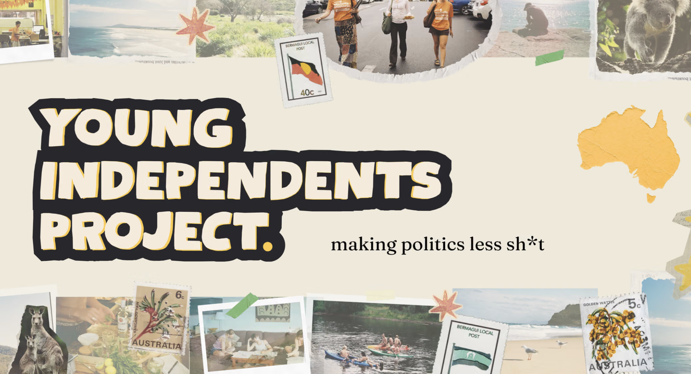
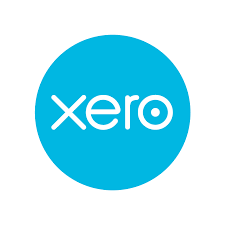
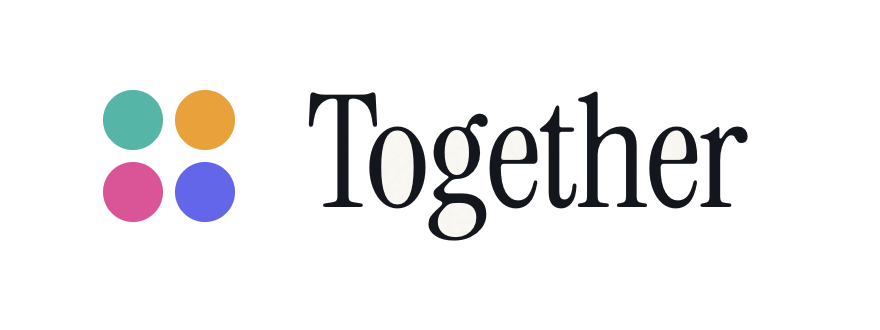

Acacia Blue
Acacia Blue Accounting is the strategic finance partner for community groups, independent campaigns, sitting members and third parties. Financial management, tax compliance and electoral funding and disclosure requirements in one place, coordinated with qualified legal advisers where a formal position is needed.
Built for organisations working within Australia's political finance rules.
Values-aligned organisations building financial capability for the long term, with governance that holds up across election cycles, not just one.
First-time candidates setting up the right structure, accounts and controls from day one, with a budget and cashflow view the campaign can make decisions on.
Elected independents managing public funding, office entitlements and ongoing disclosure, with finance and reporting that run all year, not just at election time.
Advocacy organisations and third-party campaigners spending across many electorates: expenditure tracked by candidate and electorate, registration and annual returns, and donor disclosure at volume.
How we support third parties →One of the groups above, and what Acacia Blue looks like for it.

Community Group
A youth-led initiative building the next generation of Australia's independent movement, making community campaigning accessible to young people setting up their first structures. Acacia Blue provides the financial governance and accounting behind it, so the team can focus on building the movement.
youngindies.org →Knowledge Hub, Advisory and Accounting Services come together for one monthly retainer, so there's one place responsible for closing the gap between an accountant, a lawyer and a spreadsheet, not three.
Guidance, templates and training that build your own team's financial and compliance capability, from establishment to wind-down. Referral to a named specialist whenever a question needs one.
Fractional CFO advice built into how your organisation operates: budgets, cashflow, governance and board reporting, alongside electoral funding and disclosure requirements across federal and state jurisdictions, coordinated with qualified advisers.
Reconciliations, BAS and accounts kept current every month, turned into the cashflow and budget-versus-actual reporting a committee or board can make decisions on.
All three, scaled to your organisation, for one monthly retainer. See how it fits together →
Why Acacia Blue
Most campaigns and advocacy organisations grow faster than their finance function. Acacia Blue gives them CFO-level oversight, accurate books and a clear view of their obligations, without building an in-house team. Plain-spoken, direct and neutral by design: the same standard of care applies regardless of the cause.
Specialists we coordinate with and route clients to, so the pieces around compliance stay connected.

Xero
Cloud accounting platform

Together Giving
Donor and fundraising infrastructure
Tell us where your organisation is and where it's heading, and we'll work out where Acacia Blue fits.